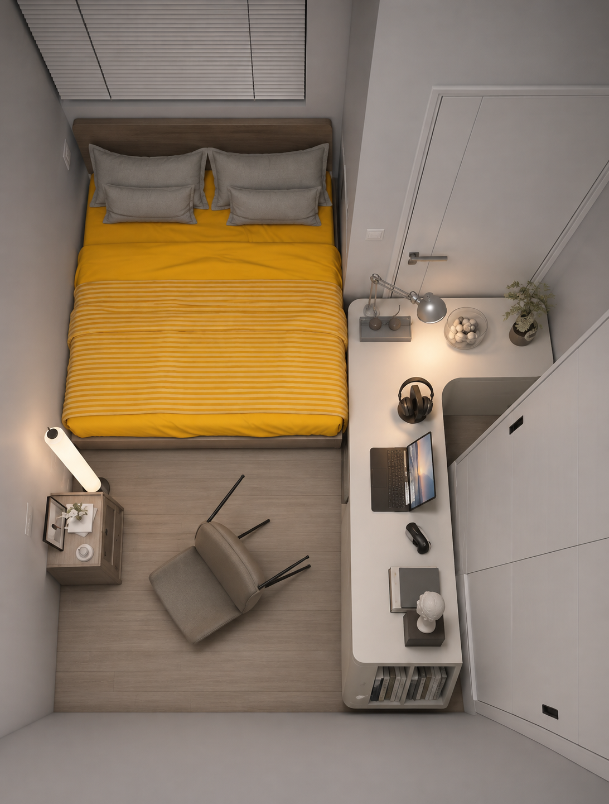

63 · 47 · 51 분 전 · 원문

테트리스처럼 딱딱 맞고 얼마나 보기좋아 으이!??!!?!??!
수집 당시 댓글 9개
에어컨쟁이 · 1 일 전
책상이랑 옷장 사이에 빈공간 불편하네요 ㅡㅡ
싼디스크 · 1 일 전
갇혔는데?
banana · 1 일 전
창문으로 나간다네요
djnard · 1 일 전
볼 수만 있네
플린태거트 · 1 일 전
섹스해야만 나가는 방
팔도비비빅 · 1 일 전
하지만 못들어감
ㅋㅋㅎ · 1 일 전
저게 그 1년동안 나오지 않으면 ~억의 방이냐?
왜 문이 없어?
위의 저건 화장실이나 보일러실일건데, 화장실 들어가기도 힘드네.
실론T · 1 일 전
철학전공자 · 1 일 전
ㅋㅋ
책상이랑 옷장 사이에 빈공간 불편하네요 ㅡㅡ